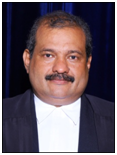
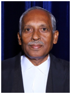
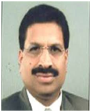

Sri. ANIL KUMAR K N
Chairman
Advocate
(MEMBER, BAR COUNCIL OF KERALA)
P O ROAD
PERUMBAVOOR 683542. Mobile : 9846126080
PERUMBAVOOR 683542. Mobile : 9846126080
Sri. AJITHAN NAMPOOTHIRI C S
Vice Chairman
Advocate
(MEMBER, BAR COUNCIL OF KERALA)
SANKARA MANA ROAD
MUTTAMBALAM P O
KOTTAYAM- 4.
Mobile : 9946445761
MUTTAMBALAM P O
KOTTAYAM- 4.
Mobile : 9946445761

Sri. MANOJ KUMAR N
Member, BCI
Advocate
(MEMBER, BAR COUNCIL OF KERALA)
AMAR, H. NO: 48/697-R
RAJIV NAGAR, ELAMAKARA P O
ERNAKULAM- 682026.
Mobile : 9447156069
RAJIV NAGAR, ELAMAKARA P O
ERNAKULAM- 682026.
Mobile : 9447156069
Sri. NASSEER K K
Hony. Treasurer
Advocate
(MEMBER, BAR COUNCIL OF KERALA)
KUNNATH HOUSE, ALUVA
CHENGAMANAD P O
ERNAKULAM - 683578 Mobile : 9847162224
CHENGAMANAD P O
ERNAKULAM - 683578 Mobile : 9847162224

Sri. JOSEPH JOHN
Hony. Secretary
Advocate
(MEMBER, BAR COUNCIL OF KERALA)
MALEKUDY HOUSE
OLAMATTOM
THODUPUZHA P O, IDUKKI -685584
Mobile : 9446131780
OLAMATTOM
THODUPUZHA P O, IDUKKI -685584
Mobile : 9446131780

Sri. MOHANDAS K B
Executive committee chairman
Advocate
(MEMBER, BAR COUNCIL OF KERALA)
KOOLYATTUVALAPPIL HOUSE
CIVIL LINES ROAD
CHUNKAM THRISSUR 680004 Mobile : 9447181922
CIVIL LINES ROAD
CHUNKAM THRISSUR 680004 Mobile : 9447181922
Sri. PRAMOD S K
Enrolment committee chairman
Advocate
(MEMBER, BAR COUNCIL OF KERALA)
SRICHITHRA LANE
VANCHIYOOR P O
TRIVANDRUM-695035
Mobile : 9895066339
VANCHIYOOR P O
TRIVANDRUM-695035
Mobile : 9895066339